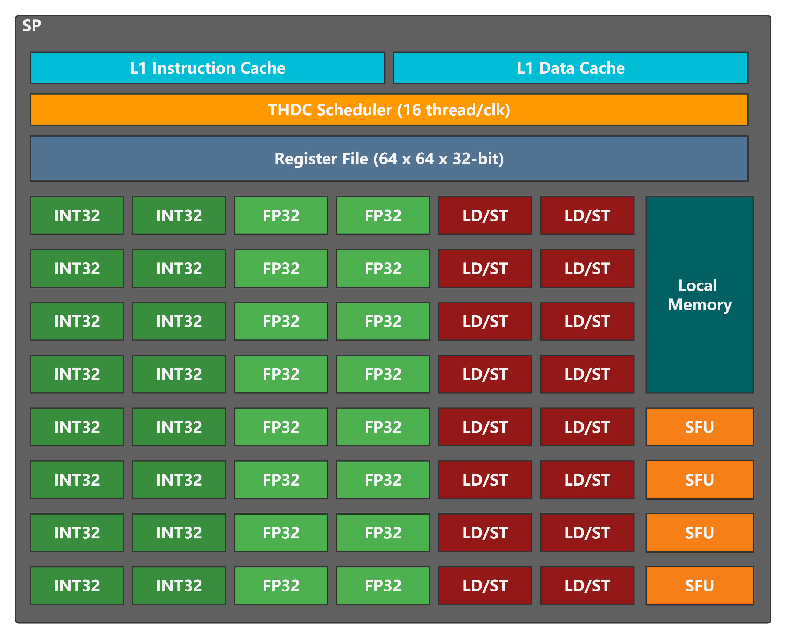

Question answer
1. 中微电的MVP架构持久持续发展的论证依据，能否自我迭代更新
自定义的指令集，保证微架构的独立性，不依赖任何第三方的发展情况及相关法律法规限制
自研编译器，能够保证可以支持任何新指令的添加，确保任何新特性的支持能够完整闭环，自我迭代更新不受任何限制
2. 在GPU 芯片规划上，阐述具体性能指标以及相应的计算方式（通过算力资源叠加、软件模拟、硬件仿真或者其他?），基于详细的硬件架构图，阐述片上互连、异构协同等是怎么考虑的
性能指标
目前规划下一代的性能指标为10tflops. 主要两个方面的改进，一是算力资源叠加，二是微架构的性能提升；将会有6个GPC(Graphics Process Cluster)，每个GPC有8个TPC(Texture Process Cluster)，每个TPC有2个SM(Stream Multiprocessor)，每个SM有4个SP(Streaming Processor)。SP为最小硬件微架构单元，其将包含16个INT32单元，16个FP32单元，16个LDST单元和4个SFU单元。SP的设计： 
计算方法
以FP32的算力计算为例：
总算力每秒 = 每SP算力 x SP的数量 每SP算力 = 核的时钟频率 x 每SP的FP32单元数量 x 每FP32单元的每个时钟周期最大运算次数
核的时钟频率：1GHz 每个FP32单元每个时钟周期最大运算次数：2 （因为支持FMAC指令，32位浮点的乘累加，即可以在一个时钟周期内完成一次乘法和一次加法）
每SP的算力 = 1GHz x 16 x 2 = 32 GFLOPS SP的数量 = 6 x 8 x 2 x 4 = 384
总算力每秒 = 32 GFLOPS x 384 = 12288 GFLOPS = 12.288 TFLOPS
该规划性能设计正在(软件)性能模拟器上进行相关设计和仿真验证
片上互联，异构协同
？
3. 软件生态建设规划，阐述如何对标NVIDIA的CUDA生态?编译层面是如何考虑的?
现已支持OpenCL/OpenGL，后续支持Vulkan，并已规划自研基于MVP ISA的高性能库，考虑从基础计算、AI，大语言模型方面开始。对于对标NVIDIA的CUDA生态问题，先从自研高性能库入手，在自研库中支持高性能内建函数，帮助用户提升应用的性能，编译器直接支持将其转换为MVP高性能指令，编译器支持的难度低；其次以OpenCL kernel/OpenGL shader的类C语言为基础，针对性的添加新语言特性，解决某些用户编程的痛点问题，涉及编译器前端，编译器支持的难度会增加；最后，将自研库和语言特性的支持进行融合，结合自研编译器，形成中微电的生态系统
4. 中微电与景嘉微的竞争情况介绍，其中中微电的技术优势和市场优势在哪里
技术优势： 中微电的自研IP特点，保证了人才技术的深度，知道每一行代码的来龙去脉，由此能够保证其长远的发展和演进的可行性和可靠性。完整的软件配套，也是打造自主软件生态的良好基础，可以完成端到端的优化和提升。从技术深度和广度上都有非明显的优势。
市场优势： 完善的技术栈及深度的可控性，确保在市场上能够灵活快速的应对市场变化及需求。技术优势也将得以体现在市场竞争上。
5. 请教GPU是否有类似CPU的信息安全隐患，行业有无利用GPU作为后门攻击的先例
虽然GPU可以被用作计算密集型任务的加速器，但它们通常没有像CPU那样直接与操作系统进行交互。因此，GPU的攻击面相对较小，常见的安全问题主要涉及以下几个方面：
驱动程序漏洞: GPU的驱动程序可能存在漏洞，黑客利用这些漏洞获取系统权限或执行恶意代码
GPU虚拟化软件漏洞：攻击者可能能够在虚拟机之间实施攻击或获取敏感数据
虽然GPU本身不太可能成为后门攻击的直接目标，但它们可以成为攻击链中的一环。例如，恶意软件可以使用GPU以隐蔽的方式执行计算任务，从而绕过传统的检测方法。此外，攻击者可能通过利用GPU进行密码破解、加密货币挖掘等活动来获取利益。
至于利用GPU作为后门攻击的先例，目前没有看到特定的案例
(1) Pipeline SMT/SIMT/SIMD (Fetch, Issue, Scheduler, Dual issue, Register file, Execution) (2) OCC/ICC/DCC (3) ISA